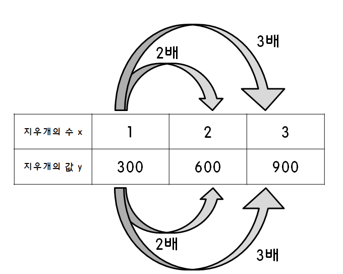
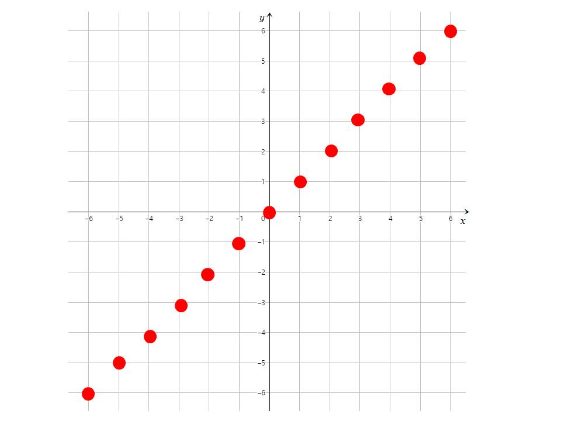
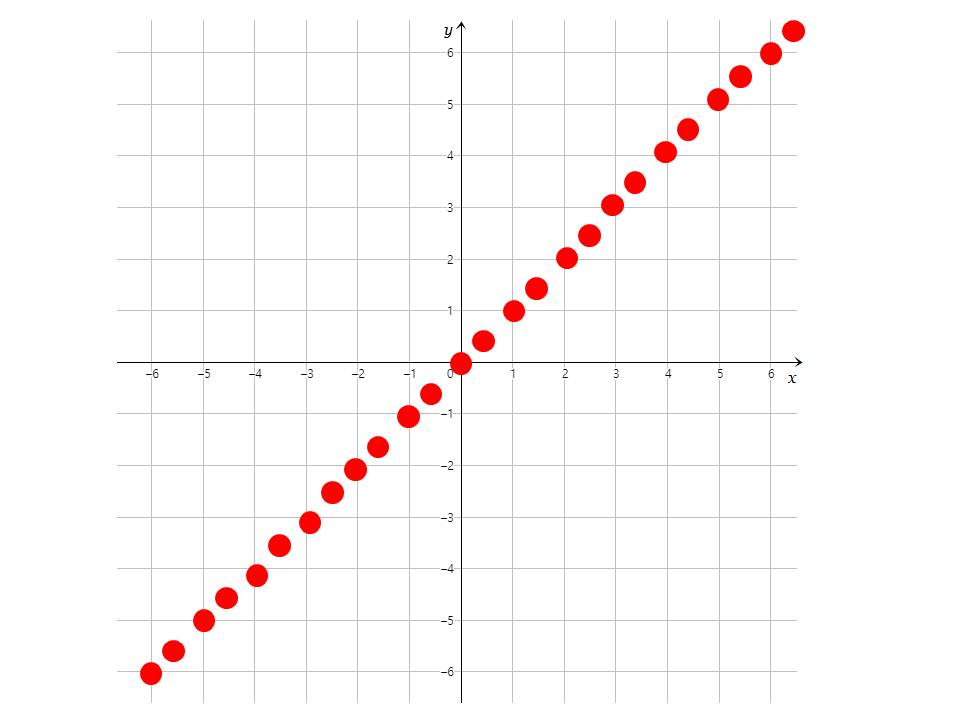
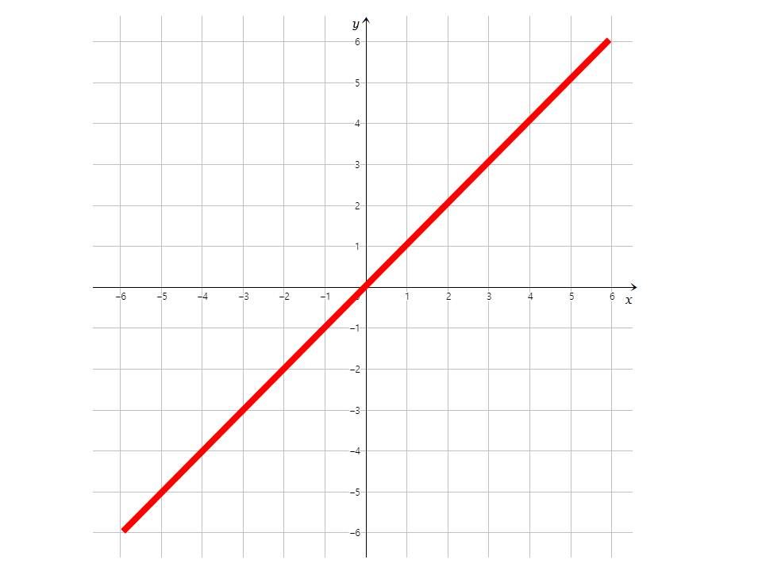

정비례
지우개 1개의 가격이 300원일 때, 지우개 2개의 가격은 600원이다. 3개의 가격은 900원이고, 4개의 가격은 1200원이다.
여기서 지우개의 개수를 x로 두고, 지우개의 가격을 y로 두면 x가 2배, 3배, 4배 늘어날 때마다 y도 2배, 3배, 4배 늘어난다.
이렇게 x가 2배, 3배, 4배 늘어날 때마다 y도 2배, 3배, 4배 늘어나는 이 관계를 정비례 관계 라고 한다.

관계식
위와 같은 지우개의 수 x와 지우개의 가격 y의 관계를 나타낸 식(y=300x)을 x와 y의 관계식이라고 한다.
정비례 관계식은 항상 y=ax의 형태이다.(여기서 a는 0이 아닌 유리수이다)
정비례 관계를 그래프로 그리기
x값의 범위가 정수일 때, 정비례 관계식을 그래프로 그리면 다음과 같이 된다.

x값의 범위가 정수보다 작을 때, 정비례 관계식을 그래프로 그리면 다음과 같이 된다.

x값의 범위가 수 전체일 때, 정비례 관계식을 그래프로 그리면 다음과 같이 된다.

정비례 그래프의 특징
- 항상 원점을 지나는 직선이다.
- 관계식은 y=ax의 형태이다(a는 0이 아닌 유리수이다)
- 정비례 관계식에서, a가 양수이면 그래프는 제 1사분면, 제 3사분면을 지나고, a가 음수이면 그래프는 제 2사분면, 제 4사분면을 지난다.
- 정비례 관계식에서, a의 값이 클수록 y축에 가까워지고, a의 값이 작을수록 x축에 가까워진다.
+Plus
a가 0이 될 수 없는 이유
a가 0이 될 경우, y=ax이므로 y=0×x, y=0이 되므로 x가 2배, 3배, 4배가 되어도 y는 항상 0으로 일정해지기 때문이다.